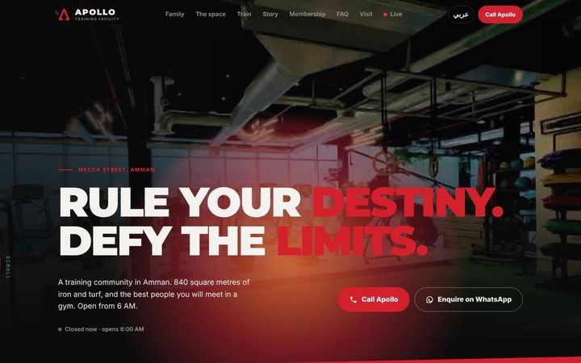

حضور رقمي للأعمال
الحضور الرقمي الذي يجلب العملاء لنشاطك التجاري.
لنساعد نشاطك التجاري على التدفّق بشكل أفضل.
نبنيه من أوله إلى آخره: موقعك بالعربية والإنجليزية، وكيف يجدك العملاء على Google والخرائط وفي إجابات الذكاء الاصطناعي، واللمسة الواحدة التي توصلهم إليك على واتساب.
كل موقع يُفحص على لوحة الاختبار الخاصة بنا قبل أن يُنشر.
I · ماذا نقدّم
طريق واحد إلى عملائك. نبنيه كلّه.
قبل أن يتصل بك أحد أو يزورك، يبحث عنك على هاتفه. هذه هي الخطوات الأربع على ذلك الطريق، وتحت كل خطوة الخدمات التي نبنيها لها.
-
مقهى قريب منينشاطك التجاريمفتوح الآن · على بُعد 5 دقائق1
يبحثون
على Google أو الخرائط أو مساعد ذكاء اصطناعي. يظهر نشاطك بوضوح، بالاسم الصحيح والمكان وساعات العمل.
- ملف Google التجاري
- الظهور في البحث (SEO)
- إجابات الذكاء الاصطناعي (GEO)
-
 نشاطك التجاريماذا نقدّمساعات العملأين تجدنا2
نشاطك التجاريماذا نقدّمساعات العملأين تجدنا2يفهمونك في ثوانٍ
ماذا تقدّم، وأين أنت، ومتى تفتح. واضح بالعربية والإنجليزية، وسريع على الهاتف.
- تصميم الموقع وبناؤه
- فحص الموقع
-
اتصالواتسابالاتجاهاتمرحبًا! هل تتوفر طاولة الليلة؟3
يصلون إليك بلمسة واحدة
اتصال أو واتساب أو اتجاهات، كلٌّ منها بلمسة واحدة. لا نماذج، ولا بحث عن رقم.
- واتساب والاتصال والاتجاهات مدمجة في الموقع
- الطلب والحجز أونلاين والأتمتة
-
التقرير الشهريالموقع متاح وسريعالملف دقيقكل الروابط تعمل4
يعودون إليك
يبقى الموقع سريعًا وصحيحًا ومتاحًا، ويصلك تقرير واضح كل شهر.
- الرعاية الشهرية والتقارير
ما تكسبهيجدونك·يفهمونك·يصلون إليكلا يضيع أحد في الطريق.
II · لماذا FellowFlow
ما يميّزنا: نبني الطريق كلّه ونختبره.
الموقع وحده لا يجلب العملاء. نبني كل ما بين البحث ورسالة واتساب، بالعربية والإنجليزية، ونختبره قبل أن يُنشر.
-
01
كلّه، لا صفحة فقط.
البحث، والموقع، واللمسة التي توصل العميل إليك. فريق واحد يبني الطريق كلّه، فلا يضيع شيء بين نتيجة Google ورسالة واتساب.
الدليلالطريق في الأعلى هو بالضبط ما نبنيه. وراء كل خطوة خدمة.
-
02
مُختبَر قبل أن يُنشر.
كل موقع يمرّ عبر لوحة الاختبار الخاصة بنا: السرعة والأمان وتخطيط الهاتف وكل رابط، بالعربية والإنجليزية. ثم يراجع أحدنا قائمة الإطلاق بيده.
الدليلاطلب تقرير الفحص لأي موقع بنيناه، وسنرسله لك. واضغط English في الأعلى: هذا الموقع هو النموذج.
-
03
رفيق لنشاطك، لا مورّد.
نفهم نشاطك أولًا، ونكتب ما سنبنيه قبل أن يُدفع أي مبلغ، ونسلّمك كل شيء: نطاقك باسمك، ومحتواك ملكك.
الدليلخمسة وعود، موقّعة من المؤسسين الثلاثة، في أسفل هذه الصفحة.
IV · أعمالنا
صُمّمت لأعمال حقيقية.
أنشطة تجارية في عمّان صمّمنا لها. مرّر المؤشر فوق أي موقع لتراه يتحرّك.
تجربة حيّة: نشاط تجاري حقيقي يستخدم الموقع بينما يمرّ بفحوصات الإطلاق لدينا. معاينة: تصميم أعددناه لنُري نشاطًا تجاريًا كيف يمكن أن يبدو موقعه.
V · باقاتنا
ثلاث مراحل. طريق واحد.
كل نشاط يبدأ بنظرة أولى مجانية. ومن هناك، هكذا نعمل معك.
-
1
المرحلة الأولى
الأساس
موقعك، مبني كما يجب.
- موقعك، بالعربية والإنجليزية
- اتصال وواتساب واتجاهات بلمسة واحدة
- سريع على الهاتف
- أساسيات البحث مُنجزة كما يجب
- مفحوص وفق قائمة الإطلاق لدينا
-
2
المرحلة الثانية
التحسين
تحسينات محدّدة ومتفق عليها.
- فحص موقعك الحالي أولًا
- صفحات وعروض جديدة مع تطوّر نشاطك
- تعديل ما يراه العملاء أولًا
- كل تعديل متفق عليه كتابيًا قبل البدء
- تعرف دائمًا متى اكتمل العمل
-
3
المرحلة الثالثة
النمو
ليجدك عملاؤك، وتستمر في النمو.
- الظهور في البحث (SEO)
- إجابات الذكاء الاصطناعي (GEO)
- رعاية ملف Google التجاري
- الطلب والحجز أونلاين والأتمتة
- الرعاية الشهرية والتقارير
VI · طريقة عملنا
نفهم أولًا. ثم نبني.
الفهم
نستمع إليك، وننظر إلى كيف يجدك العملاء اليوم.
التوصية
نخبرك بما يستحق العمل. نطاق مكتوب وسعر واضح أولًا.
البناء
نصمّم ونبني بالعربية والإنجليزية، حول الطريقة التي يقرّر بها عملاؤك.
الفحص والإطلاق
كل رابط وكل زر وكل مقاس هاتف مفحوص قبل النشر.
VII · وعدنا
خمسة أشياء نعدك بها.
مرّر المؤشر فوق كل وعد لتقرأه.
نفهم قبل أن نوصي.
نستمع أولًا وننظر إلى الأدلة. إن كنت تحتاج تعديلًا صغيرًا، أو لا شيء على الإطلاق، سنقول لك ذلك.
نبني لغاية واضحة.
التصميم والسرعة والحركة موجودة لخدمة عملائك، لا للاستعراض.
نتحمّل المسؤولية.
نطاق العمل، ومعنى الإنجاز، والتعديلات، والتسليم، كلها مكتوبة قبل أن نبدأ. ما بنيناه نحن مسؤولون عنه.
لا شيء مختلَق.
لا تقييمات مزيّفة، ولا جوائز مخترعة، ولا نتائج مستعارة. وأعمالنا نفسها معروضة بما هي عليه بالضبط.
نطاقك يبقى ملكك.
يُسجَّل نطاقك باسمك، ومحتواك ملكك. لا نقيّدك بنا.
اختبارنا في كل مشروع: هل ستقول إننا فهمنا ما يهم، وسهّلنا الأمور، وسلّمنا ما وعدنا به؟
Abdullah KishtainiAli ElbusaifiMahmoud Abu Hijleh
VIII · الفريق
الأشخاص وراء التدفّق.


IX · نظرة أولى مجانية
لنلقِ نظرة على نشاطك.
أخبرنا من أنت. ننظر إلى موقعك وإلى طريقة وصول العملاء إليك، ثم نخبرك بوضوح بما يستحق العمل. محادثة، لا عرض مبيعات.
مجانًا، ودون أي التزام.